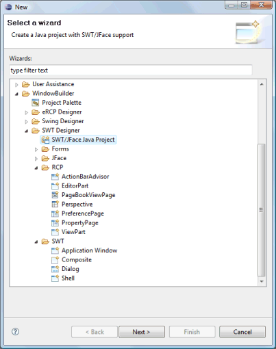
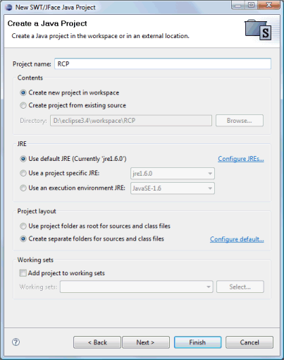

|
In order to use Eclipse SWT and JFace components,
you need to make sure that all of the appropriate SWT and JFace
jar files are on your classpath. The SWT Java Project
wizard creates a standard Java project which has all of the needed
libraries added.
The wizard can be
selected from the drop down wizard menu or from the
Eclipse New or New Project wizards.
To use the wizard, enter the project name and specify where the project should be located. In addition, specify the location of your SWT installation, choose whether to create some initial sample content and hit the Finish button.   The wizard creates a Java project and generates content for the .classpath file similar to the following.
|